Final Design
We opted for a device with the attributes we had identified as best during testing: a solid, diamond-shaped inner structure, a weak crushable outer shell, and thin spikes on the outside. We surmised that this outer shell would deform on impact and absorb kinetic energy, as well as lengthen the deceleration distance of the egg and thereby reduce the force on it during landing.
Materials
- Several boxes of toothpicks
- Hot glue, around 5 large sticks
- Raw Egg
- Hot glue gun
Instructions
NOTE: Make your glue joints in the crush structure strong enough to hold together, but not so strong that they will not break during landing. Also, blowing on joints as they're drying generally does more harm than good by shifting the toothpicks away from the joint.
- Select four toothpicks then create a square with them by lining up each end at a right angle and making sure each of the two opposite sides are parallel. Once satisfied with the general shape dab a small portion of glue at each vertex. 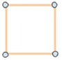
-
Select three toothpicks then create a “U” shape, essentially the same figure as before, except one side will be removed, then dab a small portion of glue at each vertex.

- Repeat the above step 3 times.
- Begin with the square shape, then attach a “U” to one side with glue at the two vertexes. Connect two more “U’s” in parallel using the hot glue. 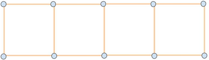
- Repeat steps 1-4 so that another one of these shapes is created.
- Select one of the long sides of the 4x1 shape and attach one tooth pick aiming away from the structure to each joint using a dab of glue. 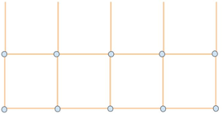
- Repeat step 6 on the other 4x1 so the same shape is created.
- Connect the two 4x2 pieces by lining up the open ends of each shape in parallel and joining each intersection with a dab of glue. 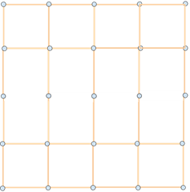
- Next select 4 toothpicks and complete the 4x4 grid by connecting them perpendicularly to the joints made in the previous step with a dab of glue. 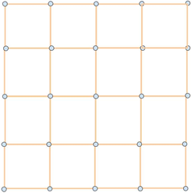
- Next build in the upward direction by attaching one toothpick with a dab of glue to every joint on one side of the grid. The toothpicks should be orientated so that every angle in the figure is 90 degrees, the upward picks should be perpendicular to the grid. 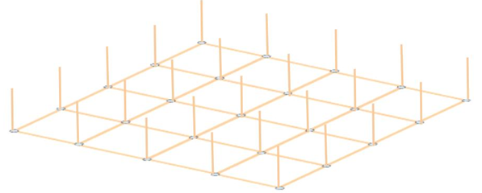
- Every upward extending toothpick, except for the one in the very center then needs to be extended one more pick up. Put a pick on each pick from the previous step in parallel and place a dab of glue at the place where the two tips meet. 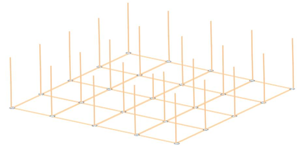
- Repeat steps 1-11 so that two of the figures above exist.
- Now the rigid center needs to be created, this is where the egg will sit. To do this combine groups of 3 toothpicks in parallel, in order to make a stronger member. This is most easily achieved by placing two toothpicks in parallel, touching one another, and running a line of glue in between them; then before the glue dries place the third pick on top of the glue line. 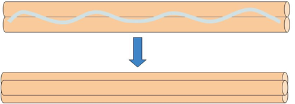
- Repeat the above process 12 times.
- Take the 12 rods and separate them into groups of two. Then, create 6 “L” shaped structures by lining up two rods perpendicular, placing the tips together, and gluing the joint where they meet. 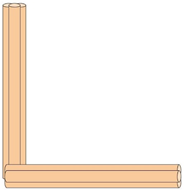
- Take two “L” shapes and create a square using the same methods as in Step 1. 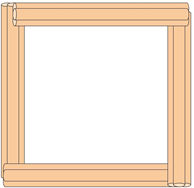
- Select two “L” shapes and glue the vertices from each piece to one another at a 90-degree angle. 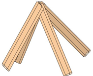
- Repeat the above step once more, so two pyramids exist.
- Create a diamond by connecting a pyramid to each side of the square by gluing a leg of the pyramid to a corresponding vertex of the square. Before the diamond is completely enclosed place the egg inside. 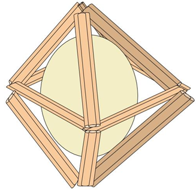
- Now the center diamond, and two halves of the outer cube must be connected. Place one of the taller ends of the diamond on the short toothpick from one of the halves. Glue this connection, as well as the four corners to their corresponding upward picks.
- Place the remaining half of the cube on top of the other so that all the toothpicks facing upward are parallel. Glue the unattached side of the diamond to the opposite side's short pick.
- Gather a large amount of toothpicks, and glue every connection between the two halves with a small dab of hot glue. Before the glue dries on each connection, place a pick, perpendicular to the upward picks to complete the middle grid/section of the cube. 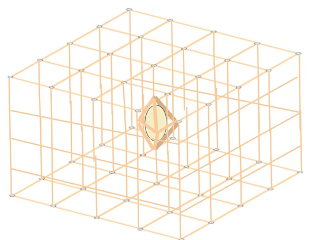
Blueprints


The Finished Device
We finished the drop device just in time, and class ended before we were able to glue on all of the spikes. Nevertheless, we were able to get the halves joined together securely and the inner shell attached, so the device was more or less functional. We initially used colored toothpicks for parts of the inner and outer shells, until we ran out. We struggled a bit during build with getting the hot glue joints right: too little glue, and the toothpicks won't stick; too much and the joint will take forever to cool, as well as not deform properly during landing.


The Drop
All of us were pretty pessimistic about the how our device would fare on Drop Day, but we were in for a surprise. As Hunter threw it off the balcony, we all watched with bated breath, waiting for the inevitable failure. However, as it hit the ground, I was encouraged by how well the frame deformed and absorbed the impact. Could it be…
My hopes were confirmed as Drew hesitantly walked over and inspected the device. The egg had survived! Yes! We'd done it!
We were also successful in the second, higher, extra-credit drop, proving that our device could handle much more than we initially threw at it. However, each drop left a large dent in the crush structure, and I doubt that it could withstand many more drops without repairs, especially if it landed on the already-crushed spots. It's definitely not a very reusable device. Luckily, it won't have to be dropped any more, as having survived its trials, it's now hanging on Mr. Corman's ceiling.